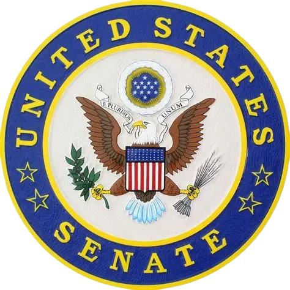

<!doctype html>
<html lang="en">
<head>
  <meta charset="utf-8">
  <title>United States News & updatesitle>
  <meta name="viewport" content="width=device-width, initial-scale=1">
  <link rel="stylesheet" href="style.css">
</head>
<body>
      <!-- Site announcement -->
<div class="site-announcement" role="note" aria-label="Site announcement">
  <div class="container site-announcement__inner">
    <p class="site-announcement__text">
      Website designed by <strong>Logan Hewitt</strong> using HTML and CSS.
    </p>
  </div>
</div>
  <header class="header">
    <div class="container">
      <a href="news.html" class="logo">
        
        <span class="logo-text">United States news & Updates</span>
      </a>
      
      <nav class="nav">
        <ul>
          <li><a href="index.html" class="active">Home</a></li>
          <li><a href="services.html">Services</a></li>
          <li><a href="news.html">News</a></li>
          <li><a href="contact.html">Contact</a></li>
          <li><a href="campaign.html">Campaign</a></li>
        </ul>
      </nav>
    </div>


  <section class="hero">
    <div class="container">
      <h2>News & Updates</h2>
      <p>Official announcements, milestones, and civic developments.</p>
    </div>
  </section>

  <section class="news">
    <div class="container">
      <h2>Changelog</h2>
      <ul class="timeline">
        <li>
          <span class="date">November 29, 2025</span>
          <h3>Senator ItsUnderwood Sworn In</h3>
          <p>Senator ItsUnderwood was officially sworn in at the U.S. Capitol by President Johny Carego, marking a new chapter in legislative leadership.</p>
        </li>
        <li>
          <span class="date">November 15, 2025</span>
          <h3>Public Service Modernization Initiative</h3>
          <p>New standards announced to improve service accessibility and reduce processing times nationwide.</p>
        </li>
        <li>
            <span class="date">October 30, 2025</span>
            <h3>Constituent Feedback Portal Launched</h3>
            <p>A new online portal has been launched to gather feedback from constituents on government services and initiatives.</p>